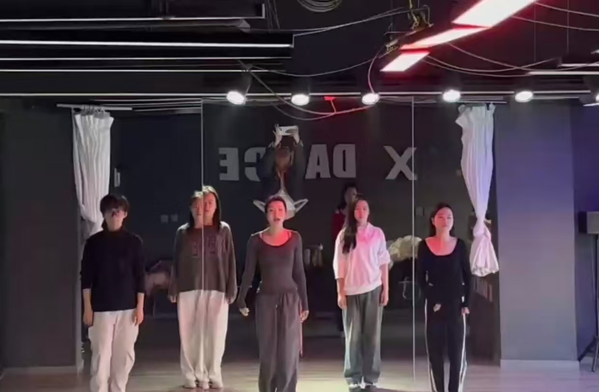
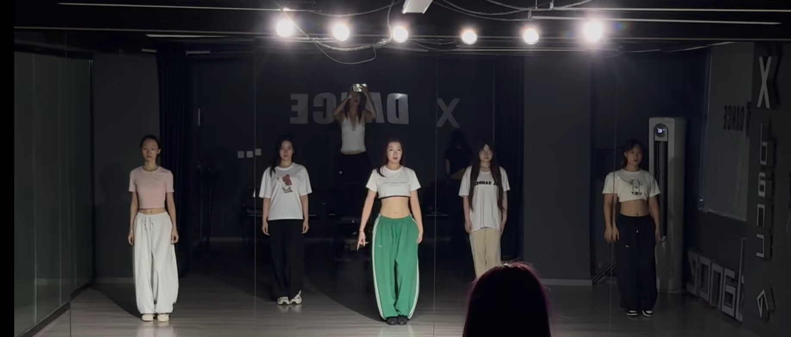
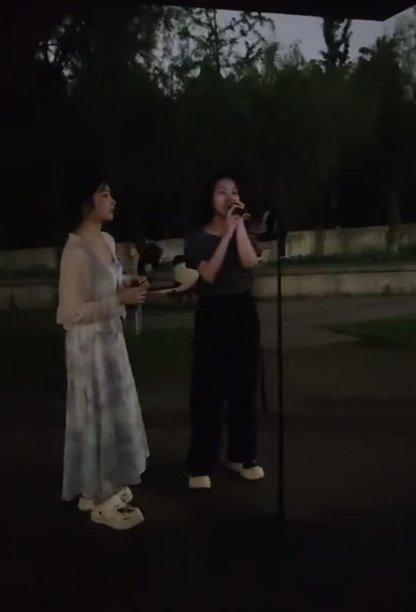

01 / 03MOVEMENT AS PRACTICE
在节奏中，
保持专注。
排练需要倾听、配合和不断调整。对我来说，舞蹈不只是兴趣，也是理解团队、空间和表达的一种方式。


01 / 03MOVEMENT AS PRACTICE
排练需要倾听、配合和不断调整。对我来说，舞蹈不只是兴趣，也是理解团队、空间和表达的一种方式。

02 / 03FIND THE RHYTHM
动作不会独立发生。只有听见彼此的节奏，及时调整位置和力度，整体才会变得清晰。

03 / 03VOICE IN THE ROOM
唱歌让我练习在众人面前保持放松，也让我学会用声音传递情绪，与现场建立连接。
A FEW NOTES
找到动作与动作之间的呼吸。
在配合中让整体变得更准确。
让身体、音乐和情绪彼此连接。